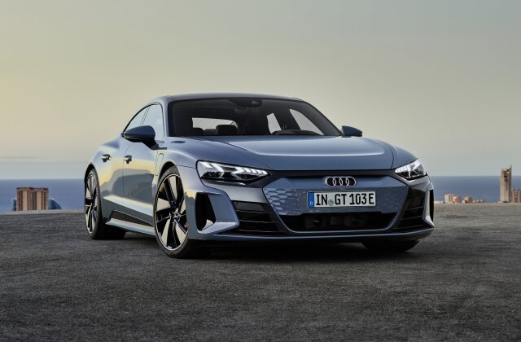
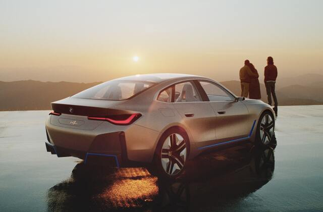
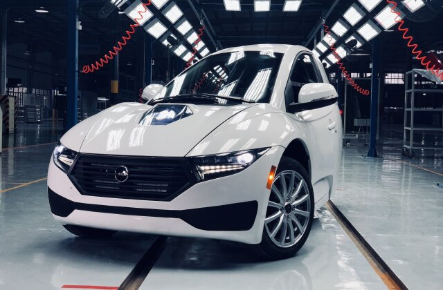
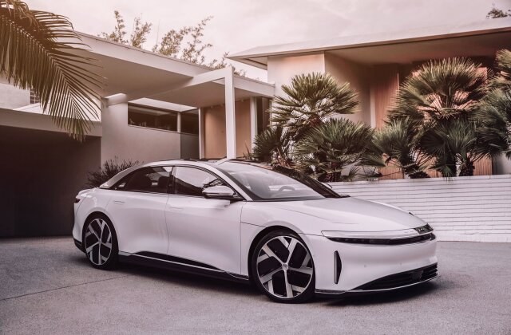
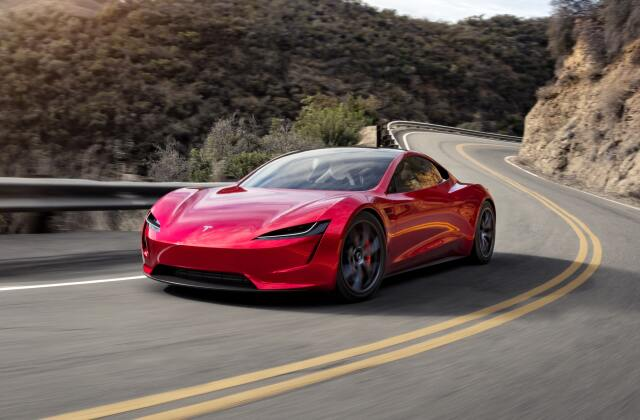
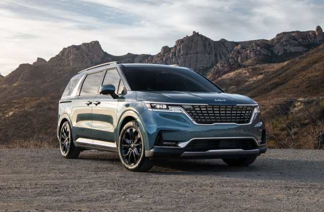
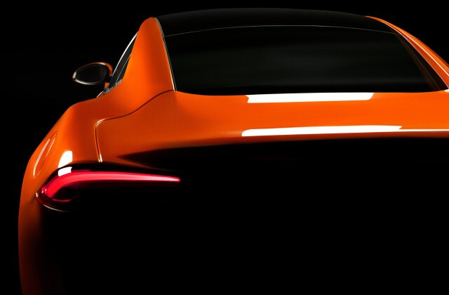
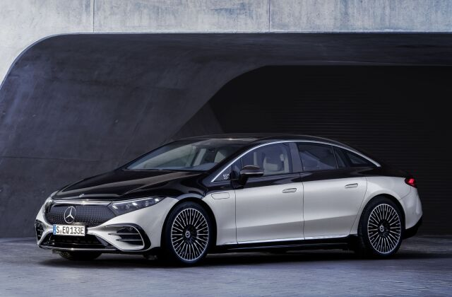
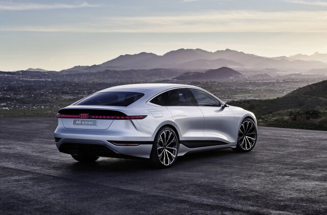

Audi e-tron GT 2022
Совершенно новый Audi e-tron GT 2022 года использует электродвигатели спереди и сзади для выработки 469 лошадиных сил при нормальном движении и до 522 лошадиных сил в течение 2,5 секунд при активном launch control. Этой мощности достаточно, чтобы разогнать четырехдверный автомобиль с 0 до 100 км / ч за 3,9 секунды.
BMW i4 2022
BMW предложит свой первый электрический Gran Coupe в двух версиях. BMW i4 eDrive40 2022 года — низкопрофильный заднеприводный седан мощностью 335 лошадиных сил. Базовая модель линейки i4 eDrive40 имеет стартовую цену в 55 400 долларов и расчетный запас хода по оценкам BMW до 482 км без подзарядки.
Electra Meccanica Solo
Electra Mechanica, разработанный компанией из Ванкувера представляет собой одноместный трехколесный электромобиль с запасом хода до 160 миль без подзарядки. Два колеса расположены впереди, а одно колесо находится на конической задней части автомобиля. Спереди Electra Mechanica Solo очень похож на традиционный автомобиль с парой широко установленных фар.
2022 Lucid Air
Lucid air — четырехдверный седан с аккумулятором, который может похвастаться невероятными характеристиками. Пара электродвигателей Lucid Air Dream Edition Performance в сумме дает 1111 лошадиных сил. Он может разогнаться с нуля до 100 км / ч всего за 2,5 секунды. По оценкам Агентства по охране окружающей среды, дальность хода составляет 760 км
Tesla Roadster
Новый трехмоторный Tesla Roadster — это огромный шаг вперед по сравнению с оригинальным родстером на базе Lotus Elise. Согласно Tesla, он может разогнаться с нуля до 100 км / ч всего за 1,9 секунды и проехать четверть мили за 8,8 секунды.
Acura Integra 2023 года
После долгого отсутствия шильдик Acura Integra вернется на дороги Америки в 2023 году. Новая модель будет элегантным четырехдверным хэтчбеком, вероятно, на той же платформе, что и обновленный Honda Civic. Acura опубликовала мало информации о новом автомобиле, кроме того факта, что он будет предлагаться с шестиступенчатой механической коробкой передач. Продажи последней модели Acura Integra в США прекратились после 2006 модельного года.
Кarma GSe-6
Калифорнийская компания Karma Automotive вскоре выпустит свой первый полностью электрический автомобиль. Karma GSe-6 — изящный четырехдверный автомобиль со способностью разгоняться с нуля до 100 км / ч за 3,9 секунды и дальностью до 482 км без подзарядки.
Mercedes-Benz EQS 2022
Флагманский седан линейки Mercedes-Benz EQ появится в 2022 году. Эквивалент легендарного S-класса, Mercedes-Benz EQS 2022 года первоначально будет предлагаться с задним приводом и мощностью 329 лошадиных сил в модели 450+ и полным приводом и мощностью 516 л.с. в модели EQS 580 4Matic.
Audi A6 e-tron
Официальных характеристик серийного автомобиля пока не обнародовано. Концепт может похвастаться расчетным временем разгона Audi с нуля до 100 км / ч менее чем за четыре секунды и запасом хода без подзарядки 700 км.